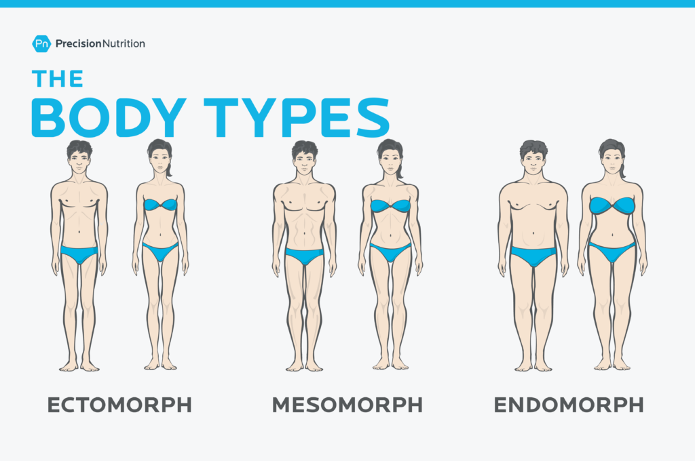

In this video, bodybuilder Joe Fazer will be talking about his life being a skinny guy
and how you can bulk up as a skinny guy.
Here's what your body type says about you
It is known to be an Ectomorph if you are thin and lean.
Ectomorphs tend to have slender waists, narrow hips and shoulders, small joints, and long legs and arms.
They tend to be slim, without much body fat or noticeable muscle mass.
As they have high mentabolism, they burn calories quickly, so they may find themselves hungry easily, but regardless of what
they eat, it does not help them to gain weight or muscle easily.

Here's a story of David:
I am a true ectomorph (classic hardgainer) and my bodyweight was 60.2kg
(132.5lbs) when I first walked into a gym. I had no idea about body types back then.
I assumed (like most beginners do) that the more I worked out the bigger I would get.
Thinking that “more was better” I started following a program designed for an elite bodybuilder.
This resulted in gains of about 1.7kg in 6 months.
After reading the body type article in that magazine I started to understand more about how my body type worked, my metabolism, and gaining weight. Being an ectomorph I need to focus on calorie intake, long rest periods, and minimum cardio.
It was only then I started making some real gains and I’ve never looked back.
It is important to know about your body type before you start doing your exercises as it can target
your body part and hone your growth.
 Log in
Log in